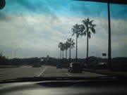
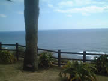
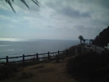
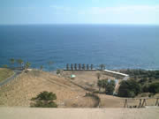
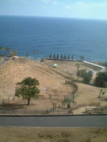
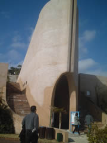
堀切峠、サンメッセ日南でモアイ見学。なんにも無い風景。やる気のない従業員。「よだきい」気質宮崎県民
※「よだきい」宮崎弁＝おっくう・面倒。
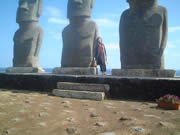
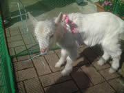
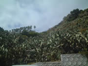
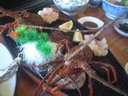
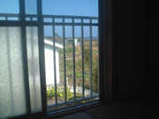
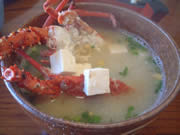
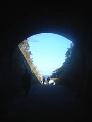
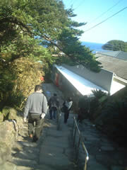
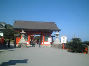
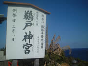
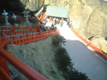
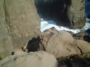
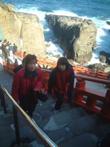
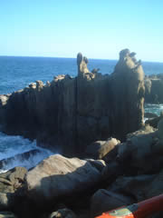
海幸彦山幸彦の話がベースの神社。海幸彦が無くした釣り針をさがしに海に
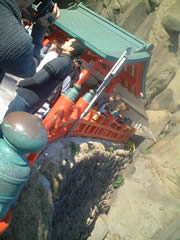
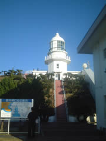

都井岬。野生馬がいる。
ここの景色が一番美しかった。山と海。コントラストがくっきりとした造形が印象派絵画のようで。
馬は野良猫状態。
そこかしこに馬。
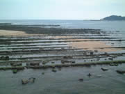
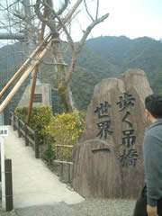
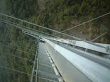
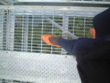
世界一の吊橋はイイよー。高所マニアはぜひ！
お肉がおいしい宮崎。地鶏に宮崎牛。
食のレベルが高い県だと思うな。うん。
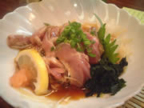
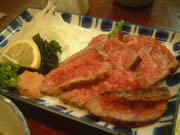
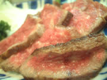
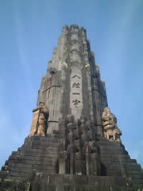
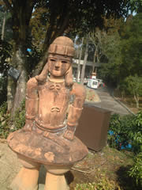
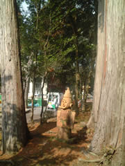
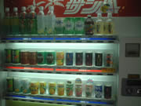
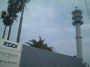
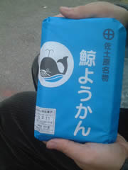
そんな塔がある佐土原名物「鯨ようかん」あんこでお餅をはさんだ和菓子。甘すぎないあんこが絶品で、二人で八個ぺろり。
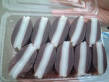
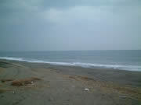
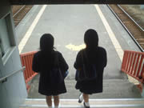
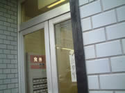
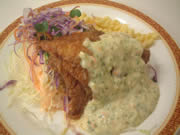